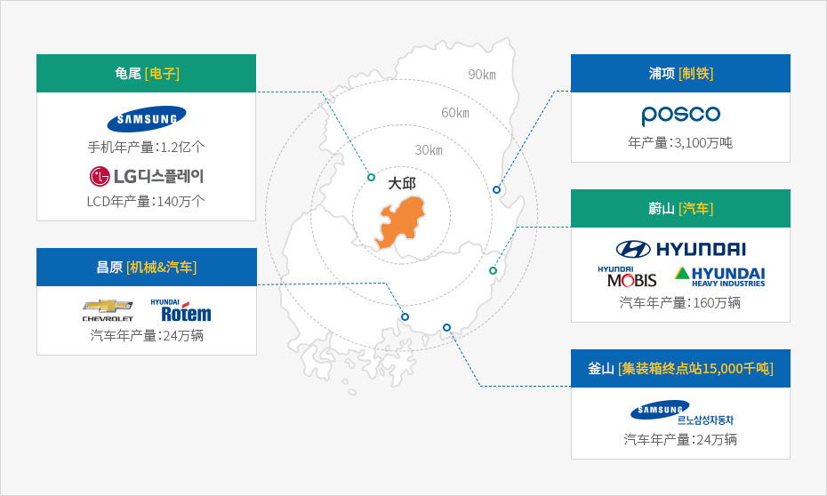

配套产业城市与发达的消费市场
Home
投资优势
大邱独特的投资环境
配套产业城市与发达的消费市场
配套产业城市与发达的消费市场
靠近世界最大的 IT 与汽车产业园区：浦项、蔚山、龟尾、昌原、釜山等
笼括韩国东南圈的教育、金融、娱乐等服务中心城市
包括周边城市(车程一小时)在内人口达520多万，有着巨大的消费市场
向周边工业城市供应“研发服务和核心零部件”

![龟尾(电子), 浦项[制铁], 昌原[机械&汽车], 蔚山[汽车], 釜山[集装箱终点站15,000千吨]](../../images/dg-ch/img020101_m.jpg)